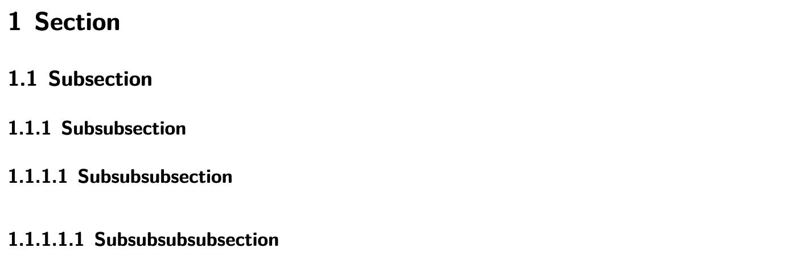

01. Academic writing with Quarto
Key Quarto features for academic writing
orientation
The implementation of literate programming we are using in this course is Quarto with R. As we have seen in previously, Quarto provides the ability to combine prose and code in a single document. This is a powerful strategy for creating reproducible documents that can be easily updated and shared.
Concepts and strategies
For many of the style components that we use in Quarto, there is a part that is addressed in the front-matter section and a part that is addressed in the prose section and/ or code block sections.
To refresh our memory, the front-matter is fenced by three dashes (---) and is where we set the document attributes. The prose section is where we write the text of the document. The code block section is where we write the code that will be executed and is fenced by three backticks (```) and the name of the code interpreter {r} (R for us).
---
title: "My document title"
format: pdf
---
This is the prose section.
```{r}
#| label: example-code-block
1 + 1
```- 1
- The title of the document
- 2
- The format of the document
- 3
- The prose section
- 4
- The code block section
With this in mind let’s look at each of these elements in turn.
Numbered sections
To number sections in Quarto, we use the number_sections key with the value yes. This is set in the front-matter section, nested under the value for the document type to be rendered. For example, to number sections in a PDF document, we would set the number-sections key to true in the front-matter section as follows:
---
title: "My document title"
format:
pdf:
number-sections: true
---- 1
- The title of the document
- 2
- The format of the document
- 3
- The type of document to be rendered, note the identation
- 4
- The key-value pair to number sections in the PDF document, again note the identation
Headers in the prose section are then numbered automatically. For example, the following markdown:
# Section
## Subsection
### Subsubsection
#### Subsubsubsection
##### Subsubsubsubsectionwould render as:
We can also control the depth of the numbering by setting the number-depth key in the front-matter section. For example, to number sections and subsections, but not subsubsections, we would set the number-depth key to 2 as follows:
---
title: "My document title"
format:
pdf:
number-sections: true
number-depth: 2
---- 1
- The key-value pair to control the depth of the numbering
Now the first and second headers are numbered and formated but third and subsequent headers are only formatted.
If for some reason you want to turn off numbering for a specific header, you can add {.unnumbered} to the end of the header. For example, the following markdown:
# Section {.unnumbered}This is particularly useful in academic writing when we want to add a reference, materials, or other section that is not numbered at the end of the document.
Table of contents
For longer documents including a table of contents can be a useful way to help readers navigate the document. To include a table of contents in Quarto, we use the toc key with the value true. Again, in the front-matter section, nested under the format value, as seen below:
---
title: "My document title"
format:
pdf:
toc: true
---- 1
- The key-value pair to include a table of contents in the PDF document
If if our headers are numbered, they will appeared numbered in the table of contents. If we unnnumbered a header, it will not appear with a section number. As with section numbering, we can also control the depth of the table of contents by setting the toc-depth key in the front-matter section. For example, to include sections and subsections, but not subsubsections, we would set the toc-depth key to 2 as follows:
---
title: "My document title"
format:
pdf:
toc: true
toc-depth: 2
---- 1
- The key-value pair to control the depth of the table of contents
And as with section numbering we can avoid listing a header in the table of contents by adding {.unlisted} to the end of the header.
Cross-referencing tables and figures
Another key element in academic writing are using cross-references to tables and figures. This allows us to refer to a table or figure by number without having to manually update the number if we add or remove a table or figure.
In this case, we will not need to add anything to the front-matter section. Instead, we will modify keys in the code block section of a code-generated table or figure.
To cross-reference a table or figure, we need to add a prefix to the label key’s value. The prefix, either tbl- or fig-, indicates whether the label is for a table or figure. Additionally, table or figure captions can be added with the tbl-cap or fig-cap keys, respectively.
Let’s look at a basic figure that we can cross-reference. The following code block will generate a very simple scatterplot.
```{r}
#| label: fig-scatterplot
#| fig-cap: "A scatterplot"
plot(x = 1:10, y = 1:10)
```
In @fig-scatterplot we see a scatterplot. ....- 1
-
The label for the figure. Includes
fig-as a prefix. - 2
- The caption for the figure.
- 3
-
The in-line reference to the figure. Uses the
@symbol followed by the label value.
plot(1:10, 1:10)
In Figure 1 we see a scatterplot. …
For tables generated by R, the process is very similar to that of figures. The only difference is that we use the tbl- prefix on the label value and the tbl-cap key instead of the fig-cap key for the caption.
We can also create tables using markdown syntax. In this case, the format is a little different. Consider Table Table 1, for example.
| Column 1 | Column 2 | Column 3 |
|----------|----------|----------|
| A | B | C |
| D | E | F |
: A simple table {#tbl-table-1}In-line citations and references list
The last element we will cover here is adding citations and a references list to a Quarto document. To add citations we need three things:
- A bibliography file
- A reference to the bibliography file in the front-matter section
- A citation in the prose section which is contained in the bibliography file
The bibliography file is a plain text file that contains the citations that we want to use in our document. The file requires the extension .bib and is formatted using the BibTeX format. BibTeX is a reference syntax that is commonly used in academia.
Let’s take a look at a sample file, bibliography.bib, that contains a single reference.
@Manual{R-dplyr,
title = {dplyr: A Grammar of Data Manipulation},
author = {Hadley Wickham and Romain François and Lionel Henry and Kirill Müller and Davis Vaughan},
year = {2023},
note = {R package version 1.1.4},
url = {https://dplyr.tidyverse.org},
}In this file, we can see that the reference is for a manual entry with @Manual. The type of entry will change what fields are relevant and/ or required. In this entry, we have the cite key R-dplyr, the title, the authors, the year, a note, and a URL. Other entries, and entry types will have different fields.
You can find BibTeX formatted references almost everywhere you can find scholarly work. For example, Google Scholar, Web of Science, and Scopus all provide BibTeX formatted references. Additionally, many journals provide BibTeX formatted references for the articles they publish.
In the front-matter of our Quarto document, we need to add a reference to the bibliography file. This is done using the bibliography key. For example, if our bibliography file is called bibliography.bib and is located in the same directory as our Quarto document, we would add the following to the front-matter section:
---
title: "My document title"
format: pdf
bibliography: bibliography.bib
---- 1
- The key-value pair to include a path to the file which contains the BibTeX formatted references.
With the bibliography file and the reference to the bibliography file in the front-matter section, we can now add citations to our document. To do this, we use the @ symbol followed by the citation key in the prose section. For example, to cite the R-dplyr reference from the bibliography.bib file, we would add @R-dplyr to the prose section as follows:
This is a citation to @R-dplyr.The citation will appear as below in the rendered document.
And automatically, on rendering the document, a references list will be added to the end of the document. For this reason if you have citations in your document, it is a good idea to include a header section # References at the end of your document.
Check your understanding
Consider the following front-matter sections, A and B.
Choose whether the following statements are true or false.
- Section numbering will be included in the PDF output for both A and B.
- Section numbering will be applied to the first three levels of headers in the PDF output for both A and B.
- A table of contents will be included in the PDF output for both A and B.
- A table of contents will be included in the PDF output for B, but will only include the first two levels of headers.
Now respond to the following questions.
- will cross-reference a figure with the label
fig-scatterplot. - is the front-matter key to include a path to the file which contains the BibTeX formatted references.
Lab preparation
This rounds out our introduction to academic writing in Quarto. In Lab 1 you will have an opportunity to practice these concepts by doing an article summary which includes some of these features using Quarto.
In preparation for Lab 1, ensure that you are prepared to do the following:
- Edit the front-matter section of a Quarto document to render:
- a PDF document or a Word document
- a document with numbered sections
- a document with a table of contents
- a document with a path to a bibliography file
- Add an inline citation to the prose section of a Quarto document
Also, since you will do an article summary, you should be prepared with:
- an article of interest related to text analysis that you have read or at least skimmed for the following:
- the research question
- the data used
- the methods used
- the results/ findings of the study
- a BibTeX formatted reference for the article
References
Bychkovska, Tetyana, and Joseph J. Lee. 2017. “At the Same Time: Lexical Bundles in L1 and L2 University Student Argumentative Writing.” Journal of English for Academic Purposes 30 (November): 38–52. https://doi.org/10.1016/j.jeap.2017.10.008.
Wickham, Hadley, Romain François, Lionel Henry, Kirill Müller, and Davis Vaughan. 2023. Dplyr: A Grammar of Data Manipulation. https://dplyr.tidyverse.org.